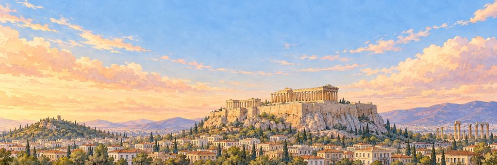

雅典 纸飞机游戏
飞过普拉卡的白房子和红瓦屋顶，一直飞到帕特农神庙。
先是普拉卡的红瓦屋顶，然后是大街两旁的高楼。闯过青铜狮鹫，再闯过卫城上的巨蛇。
岩石下的城市
5000 多年前，就有人住在卫城的岩石上了。大约公元前 508 年，雅典人开始投票定下自己的法律，这是最早的民主制度之一。1834 年，雅典成为现代希腊的首都。
“我投一票：绕着卫城再飞一圈。”
地标帕特农神庙
帕特农神庙建在卫城上，从公元前 447 年修到公元前 432 年，用的是从彭特利库斯山开采的白色大理石。1687 年，一发威尼斯炮弹击中了存放在里面的火药，爆炸把它的中间炸穿了。它一排排长长的石柱至今还立着，傍晚的阳光一照，就变成了金色。
谁在守护雅典的心愿。
精英守护者先醒来，首领守护者守着心愿本身。打中它们的弱点，会「砰！」一声；补上最后一击，就是「KO！」。然后它们都会笑着鞠躬。
-
精英


青铜狮鹫
守着金子，一分也不花 · 大街的守护者
古希腊讲故事的人说，狮鹫一半是鹰、一半是狮子，在遥远的北方看守金子。大约公元前 650 年，希腊的青铜匠人铸出额头上带圆疙瘩的狮鹫头，把它们一圈装在青铜大锅的锅沿上，个个张着嘴，朝四面八方守望。
狮鹫打了个响鼻醒过来，用后腿站起身，张开青铜翅膀，冲着飞机眨了眨一只金色的眼睛。狮鹫额头上的圆疙瘩当地一响，响得又亮又凶。它甩了甩头，扑了一下翅膀。狮鹫收起翅膀，把嘴低低地垂下来，往旁边一让，给飞机让开了路。
“我要问问它，金子藏在哪儿。”
-
首领

伊瑞克提翁巨蛇
每个月吃一块蜂蜜蛋糕 · 卫城的守护者
古代雅典人说，卫城上住着一条大蛇，守护着卫城，他们每个月都给它留一块蜂蜜蛋糕。公元前 480 年，波斯大军向雅典开来，人们发现蛋糕一口都没动。雅典人把这当作该离开的征兆，用船把家人送到了安全的地方。
巨蛇从橄榄树上松开身子，抬起戴着金冠的头，吐着信子盯着飞机。巨蛇的金冠滑下来，盖住了一只眼睛，它把橄榄树缠得更紧了。巨蛇把戴着金冠的头慢慢低到橄榄树根边，鞠了一躬。飞机继续往前，飞过了帕特农神庙。
“我要给它带一块蜂蜜蛋糕，以防万一。”